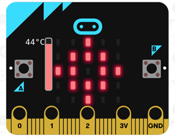

Reto 04. Termostato con icono y muestra de temperatura.
Un termostato es un dispositivo que controla la temperatura y en función de la misma pone en marcha o para un actuador. En nuestro caso se trata de colocar un icono de sol en la matriz de leds cuando la temperatura de microbit supere los 30ºC, además el sistema debe mostrar la temperatura en ºC cada segundo.
